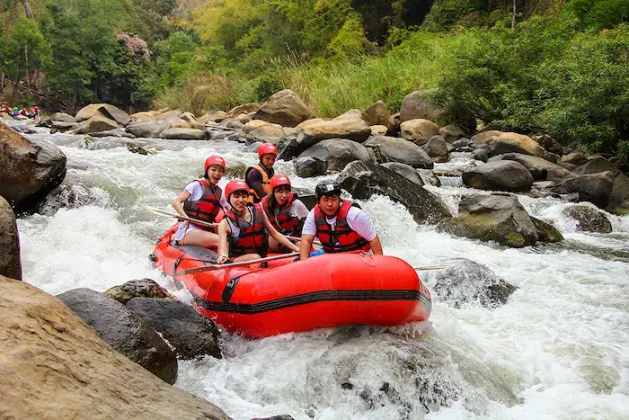
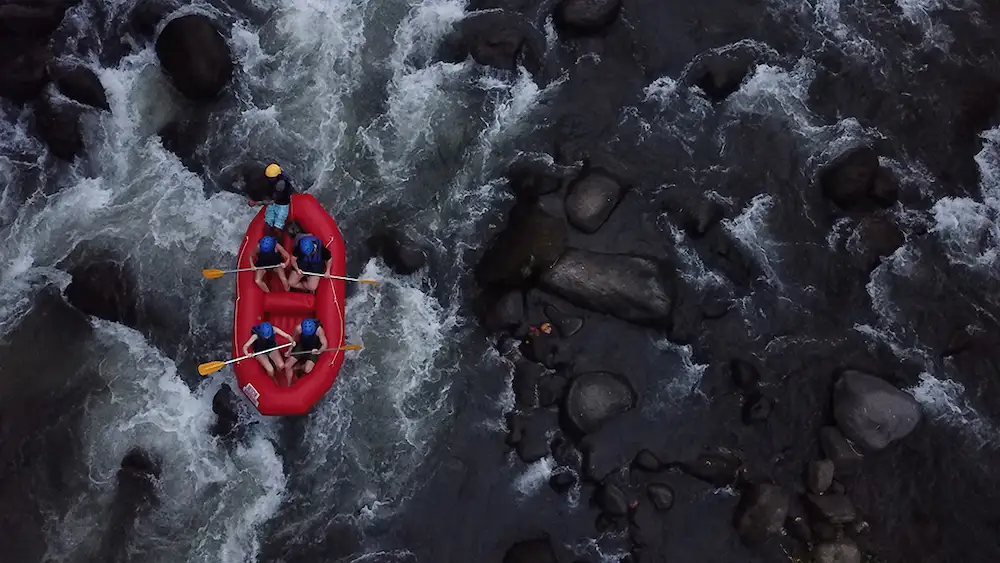
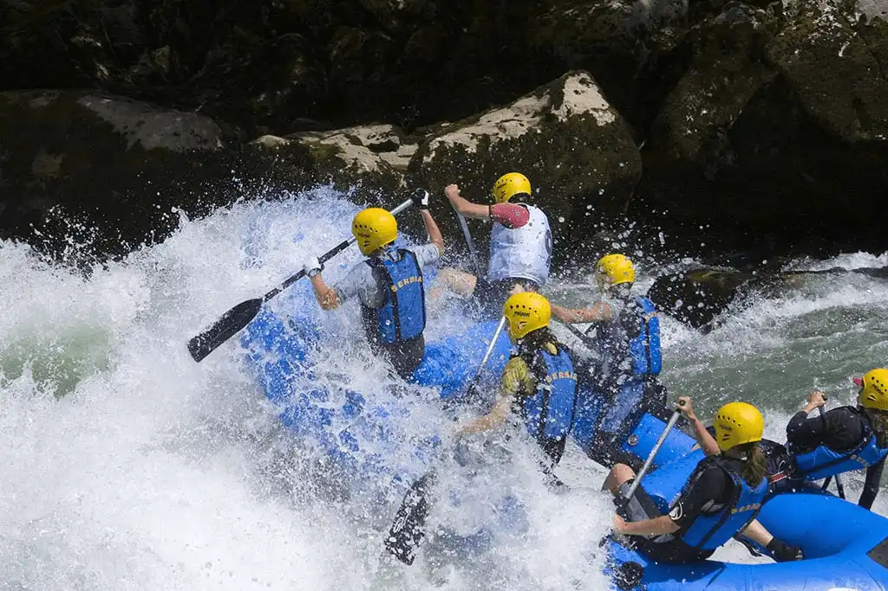
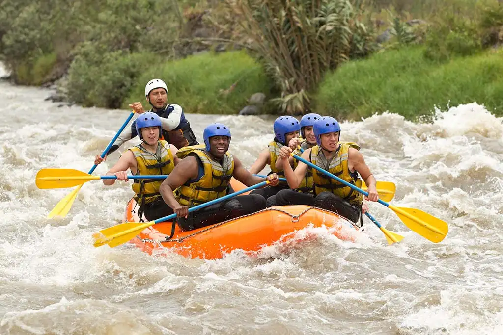

At White Water Rafting Company, we provide thrilling and unforgettable rafting experiences. Our experienced guides ensure your safety and enjoyment on every trip.


At White Water Rafting Company, we provide thrilling and unforgettable rafting experiences. Our experienced guides ensure your safety and enjoyment on every trip.
White water rafting is more than just an exciting outdoor activity—it is an experience rooted in history, teamwork, and the human desire for adventure. Long before it became a popular recreational sport, rivers were essential pathways for exploration and survival. Early explorers and indigenous inspired future adventurers.

Today, white water rafting has evolved into a thrilling sport enjoyed by people all over the world. It combines adrenaline, teamwork, and a deep appreciation for nature. Whether navigating calm waters or tackling powerful rapids, rafters learn to trust their team, adapt quickly, and respect the forces of the river.
